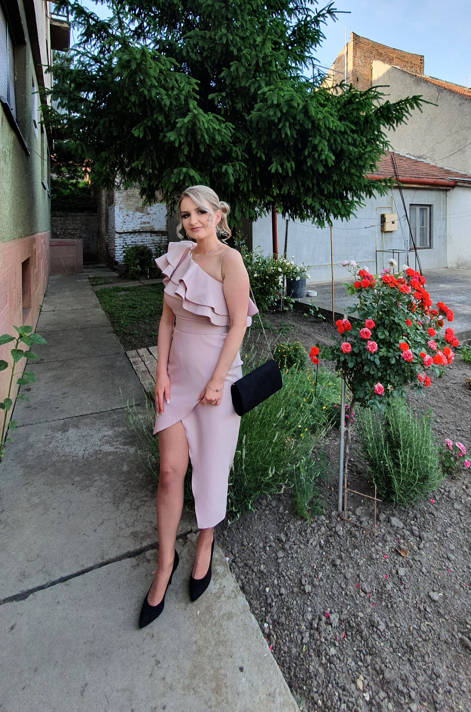

Jelena Zivanovic

Summary
I'm Jelena, a dedicated professional who recently completed a master's thesis at the Technical Faculty, showcasing my analytical and research skills in technical subjects. With a solid foundation in both technical expertise and practical experience in human resources, I bring a unique blend of capabilities, making me well-suited to contribute effectively to projects while fostering a positive and collaborative work environment.
Education
- Belocrkvanska gimnazija i ekonomska škola, Bela Crkva 2012.-2016.
High school
- Technical Faculty “Mihajlo Pupin”,Zrenjanin 2018.-2022.
Graduated engineer of management
- Technical Faculty “Mihajlo Pupin”,Zrenjanin 2022.-2023.
Master engineer of management
Work experience
Public communal company “Belocrkvanska jezera”.
2022.-2023
- requiring, receiving, checking
- planning and project management
- work with accounts and invoices
Skills
- Computer skills: excellent
- Programs for working with documents, programs related to the Internet, Internet applications
Awards and Certifications
- English certificate level B2
Other